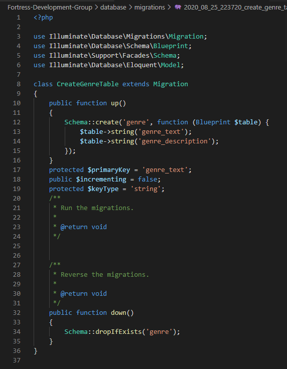

For this sprint I was in charge of implementing the games genre systems as well as searching and displaying games based on their genres This sprint I had to learn two different but connected aspects of the project, eloquent and mariadb. Mariadb was the Mariadb was needed as I had to be able to see if the genres I had added to the games migration had actually come through to the database. I was told by a team member how to link my local laravel work to the mariadb database, so there wasnt much individual learning needed for this. Eloquent was a new skill I needed to learn as while I was expierenced at creating tables in sql, I hadnt previously worked with eloquent sql. 